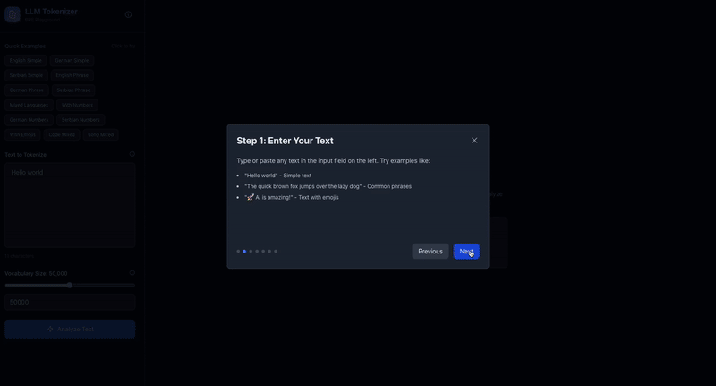
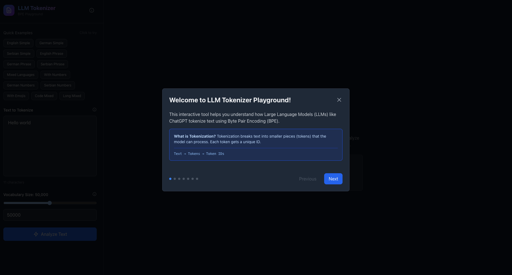
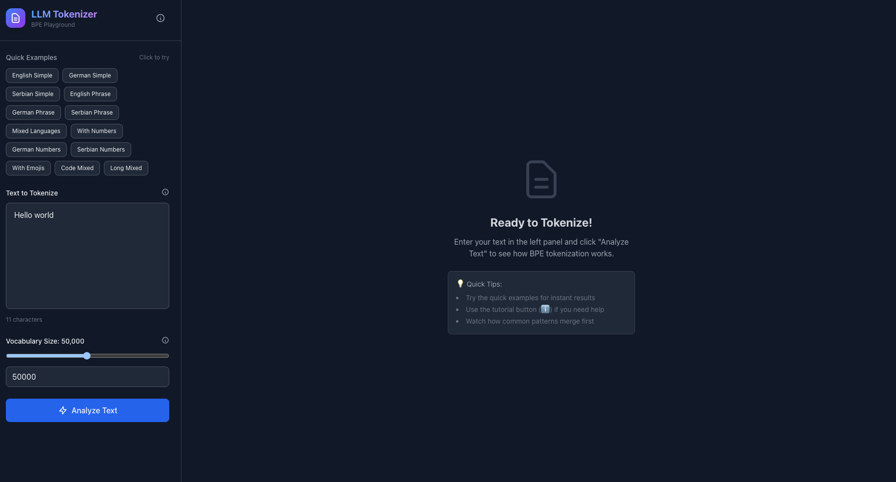
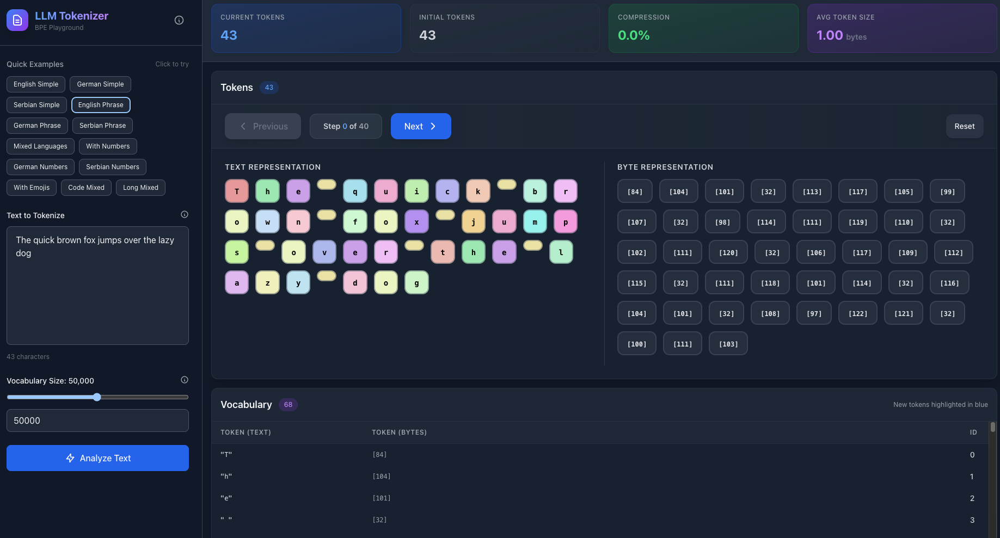
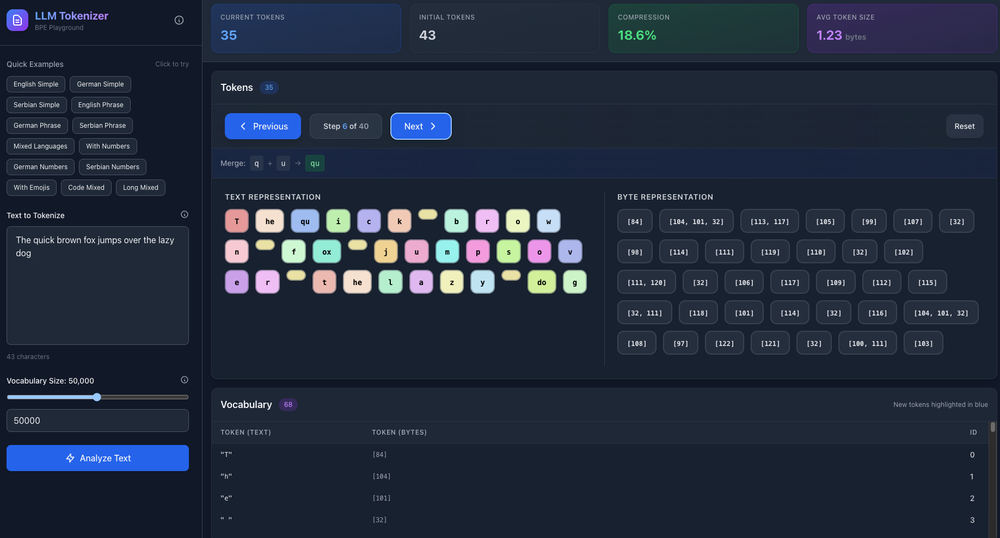
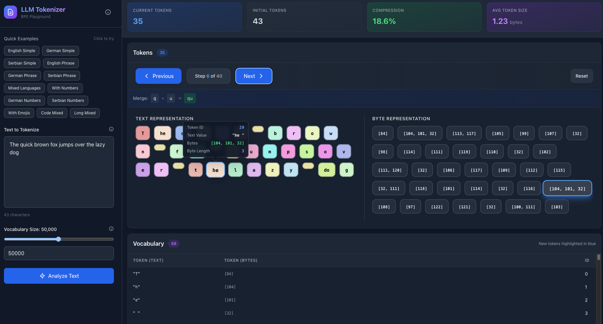

Interactive LLM Tokenizer Playground
A high-performance educational platform designed to expose the "hidden mechanics" of Large Language Models. By visualizing the Byte Pair Encoding (BPE) process step-by-step, this tool helps engineers understand exactly how raw text is compressed into the tokens that power modern AI.

The "Under the Hood" Mission
In the rush to adopt AI, many developers treat LLMs as black boxes. However, ignoring the fundamentals leads to costly mistakes—such as inefficient prompt engineering, misunderstood context limits, and token-related bugs.
I built this project to fix that blindness.
I wanted to create a tool that forces the user to see the granular reality of AI: that models don't read "words," they read statistical chunks of bytes. By exposing the BPE algorithm visually, I aim to help developers build better, more efficient AI-native applications.
Key Capabilities
🔍 Step-by-Step Transparency
Watch the algorithm "think." Users can step through every single merge operation to see exactly when and why characters combine into tokens.
⚙️ BPE from First Principles
No external libraries. I implemented the Byte Pair Encoding algorithm from scratch to demonstrate a deep, low-level understanding of NLP mechanics.
⚡ Rust-Powered Speed
Utilizing Rust's memory safety and zero-cost abstractions to perform thousands of iterative merges and frequency counts in milliseconds.
📘 Dynamic Vocabulary
A real-time look at how the model's "dictionary" is constructed on the fly, mapping byte sequences to unique integer IDs.
🔢 Raw Byte Inspection
Toggle between text and byte views to understand how the tokenizer handles complex UTF-8 characters and emojis at the binary level.
📈 Efficiency Analytics
Instant feedback on compression ratios, helping users understand the token-cost implications of their text inputs.
Technical Deep Dive: Why Rust?
When dealing with tokenization, performance isn't just a luxury—it's a requirement. The BPE algorithm involves tight loops of string parsing, frequency counting, and iterative merging. In high-level languages like Python or JavaScript, these operations can become sluggish as vocabulary size increases.
🦀 The Rust Advantage
I chose Rust for the backend to ensure the application remains blazing fast regardless of input size. Rust's strict memory management allows for highly optimized string manipulation without the overhead of a garbage collector. This results in an API that can process complex texts and return the full merge history almost instantly, providing the "real-time" feel necessary for an interactive educational tool.
Interface Gallery





Results & Impact
This project bridges the gap between high-level AI concepts and low-level systems engineering.
• Educational Clarity: Provides a concrete mental model for developers, helping them write more token-efficient prompts.
• High-Performance Architecture: Demonstrates the ability to integrate a systems-level backend (Rust) with a modern interactive frontend (React) seamlessly.
• Algorithmic Mastery: Proves the ability to implement core AI algorithms from scratch, ensuring a deep understanding of the technology stack beyond just "calling APIs."